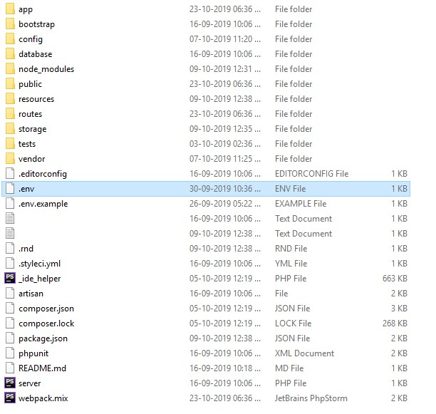

# Guide
The goal of InfyCare is to Manage your hospital appointment booking digitally.
# Technologies Used
This system uses multiple technologies to give the best possible experience.
- PHP with Laravel Framework 8.0
- MySQL 5.6+
- PHP 7.4+
- jQuery
- Ajax
# Installation Guide
We tried our best to make the installation of the system as easy as possible. System Requirements It is assumed that you have primary knowledge Laravel installation knowledge since this application is built on Laravel.
# System Requirement
It is assumed that you have primary knowledge Laravel and JS application installation knowledge since this application is built on Laravel with JS.
You can read about laravel Requirements here (opens new window)
(Optional) You need update below variables in php.ini file if you want to send bigger files.
upload_max_filesize = 50M
max_file_uploads = 50
post_max_size = 100M
# Setup InfyCare into Local Environment
You can set up InfyCare into your local by using given zip.
Here are some steps to set up InfyCare into your local environment :
# 1. Install xampp/wamp (if you don't have it).
# 2.
Create folder InfyCare
- if you are using wamp then create InfyCare folder under you_path_to_wamp/www/
- if you are using xampp then create InfyCare folder under you_path_to_xampp/htdocs/
# 3. Unzip dist/src zip to InfyCare folder
# 4. Point the domain to the uploaded folder
You need to create virtual host first to setup InfyCare. You can find steps here to create virtual host.
- You can find steps here (opens new window) to create virtual host on
XAMPP. - You can find steps here (opens new window) to create virtual host on
WAMP.
Point your domain or subdomain to the InfyCare folder.
Please note that, InfyCare must be installed on a primary domain or subdomain. Installing on a sub-folder will not work, for example:
example.com/InfyCare (Invalid)
localhost/InfyCare (Invalid) if you are putting it in sub folder or root website)
example.com (Valid)
local.InfyCare.com (Valid)
InfyCare.test (Valid)
# 5. Steps to setting up the project
Please click here to follow the next steps for setting up the project
# Setup InfyCare System
If you have purchased the InfyCare system then you will be able to find the zip named
dist.zip.
Now if you want to set up InfyCare on your server then you can directly copy the
dist.zip folder to your web root directory on a server and the following steps:
# 1. Copy files to web server
Upload dist.zip to your web server's root (public_html) and extract it there.
# 2. Setup your database
- Open PHPMyAdmin on your server and do a login.

- Click on the Databases tab.

- Create a new database and specify a Database name of your choice and Click Create button.
Now on the left, select the database (infy_care) OR the one that you have created.
Click Import in the top menu
- Under Import, choose the default sql file from dist/database/infy_care.sql and click button Go.
# 3. Setup environment .env file
- Open .env file from your server's root folder.

- Update your .env file
You need to change the following information into your environment (.env) file.
- APP_NAME - Name of your Application
- APP_URL - Change this URL with your server URL (including trailing path if you are putting it in sub folder or root website)
- DB_HOST - Put your database hostname here
- DB_PORT - Put your database port here if it does not default to 3306
- DB_DATABASE - Change it to your database name
- DB_USERNAME - Name of your database user
- DB_PASSWORD - Password of your database user
You will also need to set up mail configuration, you can read more about here for that setup based on mail service that you use.
- MAIL_DRIVER
- MAIL_HOST
- MAIL_PORT
- MAIL_USERNAME
- MAIL_PASSWORD
- MAIL_ENCRYPTION
- MAIL_FROM_ADDRESS
- MAIL_FROM_NAME
If you want to store your files to direct your s3 bucket then you have to use following
.env variables.
You need to change FILESYSTEM_DRIVER and MEDIA_DISK value to
s3 when you are using AWS file storage.
- AWS_ACCESS_KEY_ID=
- AWS_SECRET_ACCESS_KEY=
- AWS_DEFAULT_REGION=us-east-1
- AWS_BUCKET=
- AWS_ENDPOINT=
- AWS_URL=
Or you can use your choice of storage driver to store your media assets if you want. All of your attachments will be placed into that.
Set Stripe configuration it is using while book appointment payments. Here are some links by using it you will get an idea about how to generate stripe API keys.
- STRIPE_KEY=
- STRIPE_SECRET_KEY=
- STRIPE_WEBHOOK_SECRET_KEY=
Also, please set the google captcha keys too. Here (opens new window) is link to generate and get the keys of google captcha.
- NOCAPTCHA_SECRET=
- NOCAPTCHA_SITEKEY=
Follow below guide to make the Google Calendar Integration works. you need to set following env. You need to enable the google calendar API, Please Click Here (opens new window) to generate the the OAuth file.
Also Watch this video (opens new window) to get the file.
Set the redirect URL to : YOUR_APP_URL/google/redirect // e.g
https://infy-care.com/google/redirect
Put the downloaded file to storage/your-file-name.json
- GOOGLE_OAUTH_PATH="your-file-name.json"
Set up the Paystack Credentials into env:
You have to create account from Here (opens new window) and then you can find steps here to generate sectet keys Here (opens new window)
Please use your email into Merchant Email
- PAYSTACK_PUBLIC_KEY=
- PAYSTACK_SECRET_KEY=
- PAYSTACK_PAYMENT_URL=https://api.paystack.co
- PAYSTACK_MERCHANT_EMAIL=
DO NOT FORGET TO FOLLOW GIVEN STEPS :
You need to add the callback url into your paystack account :
APP_URL/paystack-payment-success
Set up the Paypal Credentials into env:
You have to create account from Here (opens new window) and then you can find steps here to generate keys Here (opens new window)
Please use your email into Merchant Email
- PAYPAL_CLIENT_ID=
- PAYPAL_SECRET=
#change mode to "live" while moving to production
- PAYPAL_MODE="live"
Set up the Razorpay Credentials into env:
You have to create account from Here (opens new window) and then you can find steps here to generate keys Here (opens new window)
Please use your email into Merchant Email
- RAZOR_KEY=
- RAZOR_SECRET=
Set up the Authorize.net Credentials into env:
You have to create account from Here (opens new window) and then you can find steps here to generate keys Here (opens new window)
Please use your email into Merchant Email
- AUTHORIZE_LOGIN_ID
- AUTHORIZE_TRANSACTION_KEY=
Set up the Paytm Credentials into env:
You can find steps here to generate keys Here (opens new window)
Please use your email into Merchant Email
- PAYTM_ENVIRONMENT=
- PAYTM_MERCHANT_ID=
- PAYTM_MERCHANT_KEY=
- PAYTM_MERCHANT_WEBSITE=
- PAYTM_CHANNEL=
- PAYTM_INDUSTRY_TYPE
Set Zoom configuration it is using in Live Consultations module. So first of you need to create your zoom app into zoom marketplace and need to generate the API Keys and credentials.
Go to Link (opens new window)and do sign in.
Click
Developbutton on header and selectBuildApp menu.Choose the
JWTand create an application with the app name that you want.Input required information and click
Continueuntil your app will be activated.
After completing the above steps, you need to update your .env file by placing below keys inside
that.
Please use your email into Merchant Email
- ZOOM_API_URL="https://api.zoom.us/v2/"
- ZOOM_API_KEY="INPUT_YOUR_ZOOM_API_KEY"
- ZOOM_API_SECRET="INPUT_YOUR_ZOOM_API_SECRET"
# 4. Admin login
You can do admin login by accessing given URL.
YOUR_APP_URL/login
email: admin@infycare.com
password: 123456
# 4. Doctor login
You can do doctor login by accessing given URL.
YOUR_APP_URL/login
email: doctor@infycare.com
password: 123456
# 4. Patient login
You can do patient login by accessing given URL.
YOUR_APP_URL/login
email: patient@infycare.com
password: 123456
# Key Features and Concepts
Here are some Key Features and Concepts that InfyCare provides.
# Landing Page
Its comes up with beautiful landing page, which helps patients to get information about the hospital and doctors and their specialities.
Patient can book appointments from landing page and also registered to system. They also can submit queries via contact us form.
# Admin Panel
We have created beautiful and user attractive admin panel to manage the contents for landing page.
Admin can manage all the doctors / patients / appointments and also able to create new staff's account with assigned roles / permissions.
You can change the system settings from admin panel, like you can change the hospital schedule time, change contact email, number, etc.
# Dashboard
Dashboard is more important thing in each application, as you can get quick information from there.
Here you can get information about today's appointments, total registered patients and etc.
# Staff Management
You can create new user accounts with specific permissions if you want. Staff can also able to do login and he can see the lists of modules as per assigned permissions.
# Doctors Management
Here you can see lists of doctors that you have added to your system, right now only admin can add new doctors. you are also able to change the details of doctor too.
# Patient Management
Here you can manage the patients that registered via landing page or added by you. You can change their password and other details from here.
You can see lists of appointment booked by specific patients in detail screen.
# Appointments Management
Appointments are generally for patients, but some case if patient wants admin to book their appointment, at that time this will be usefull. Admin can book new appointments from here on behalf of patient.
Also, you can see lists of appointments here, there is another option there Calendar view, by clicking on it you can see the lists of appointments in calendar view.
# Patient Visits Management
Admin can add / delete patient visits records from here. Patient visits are the records who will be entered by the doctors to track patients visits and the other information about their patients.
# Services & Categories Management
Here you can add different kind of Services and its categories, Services are generally used in appointments. Patient will Select the service while booking the appointments.
You can define the service charge per service.
# Front CMS
Admin can change each content of landing page from here. e,g Upload new images for sliders, change some texts on it, etc.
# Schedules
Schedule means the hospital timing per day. Admin will define the hospital time from Settings -> Schedules.
Then doctors are able to choose time between the hospital time, if Admin is saying that hospital will be closed on sunday, then doctor will not able to choose schedule time on sunday.
# Settings
Settings will include some other set of modules .
- General Setting
- Clinic Schedules
- Roles & Permissions
- Currencies
- Countries
- States
- Cities
# Doctor Panel
# Dashboard
Doctors can see lists of today's appointments count and other widget in dashboard. they can also able to see the lists of recent appointments as per day / week / month.
# Appointments
Here doctors can see their appointments only, they can later change the status to checked-in, check-out and cancel.
# Schedules
Doctor can set their availability as per day in this module, so patient will be booked slots accordingly. if doctors are selecting that Monday they will be available from 10:00 - 12:00 then patient can see slots between that time only.
# Patient Visits Management
Here doctors can add new visit record for patients, and track their health progresses.
# Patient Panel
# Dashboard
Patient can see lists of appointments in dashboard, they can see today's and upcoming appointments here.
# Appointments
Here you can book new appointment with specific doctor by selecting different services. Later you can cancel the appointment if you don't want to go. Also, you can delete your appointment records too.
# Visits Listing
Here you can see the lists of visits added by your doctors. in visit details screen you are able to see the lists of prescriptions, notes, observation notes and problems added by doctor.